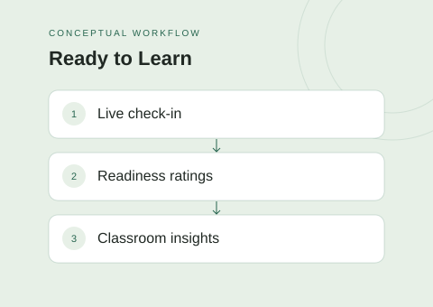
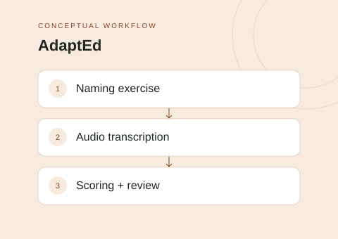

Full-stack · Applied AI
CortexDocs AI
A document workspace that brings project files, editing, and document-grounded AI conversations together.
Explore CortexDocs AII'm Yee Kiu Yeung. This is a collection of my work exploring thoughtful applications, machine learning, and intelligent game agents.
Three projects connecting technical ideas with everyday workflows.
A document workspace that brings project files, editing, and document-grounded AI conversations together.
Explore CortexDocs AI
A classroom readiness platform connecting student check-ins with teacher and school-level views.
Explore Ready to Learn
An educational assessment prototype that turns recorded naming exercises into reviewable results.
Explore AdaptEdFrom document copilots to game-playing agents. Each project explores a different problem.
A Court Services workbench combining a web interface, backend API, and document-processing services.
A mobile matching application connecting user profiles and preferences with discovery and habit-based scoring.
A document workspace that brings project files, editing, and document-grounded AI conversations together.
A classroom readiness platform connecting student check-ins with teacher and school-level views.
An educational assessment prototype that turns recorded naming exercises into reviewable results.
A computer-vision study comparing neural-network approaches to calorie estimation from food imagery.
An image-classification study comparing a custom CNN with feature-based classical classifiers.
An autonomous Azul player exploring heuristic-guided Monte Carlo tree search under a thinking-time budget.
Two connected Tetress projects: single-player heuristic search and a competitive minimax-based agent.
A tabular machine-learning pipeline for predicting book ratings and rating tiers from user and book data.
My projects span full-stack applications, computer-vision experiments, and search-based game agents. This portfolio brings that work together, with a closer look at the problem, technical approach, and limitations of each project.
React · TypeScript
Express · Spring Boot
PostgreSQL
Python · PyTorch
Computer vision
Retrieval-augmented generation
Tree search · Minimax
Heuristic design
Model comparison
Find my public work and project repositories on GitHub.